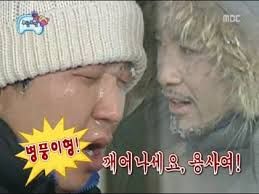

'요트의 천국' 전곡항에 일렁이는 무지갯빛 파도의 정체는?
DCTRIBE
드라마 <꽃보다 남자>에 나온 명대사 중 하나다.
극중 요트를 타고 낚시를 하러 간다는 부잣집 도련님 윤지후(김현중 분)가
부드러운 갈색 머리를 바람에 휘날리며 이렇게 말했다. 벌써 11년이 지났지만
여전히 '손발이 오그라드는' 대사로 꼽힌다. 여기서 하얀 천은 돛을 의미한다.
요트는 바람이 불어오는 방향에 따라 돛을 움직여 추진력을 만든다.

"엄마, 싫어!"라고 말하는 아이, 어떻게 할까요?
Q. '엄마 싫다'고 말하는 아이저희 아이는 29개월 된 남자아이입니다.
속상할 때, 자기 마음대로 되지 않을 때 "엄마 싫어, 엄마 가!"라고 말합니다.
이럴 때 어떻게 대응해야 하나요?
A. "엄마, 싫어!"라고 말하는 아이,
렇게 하세요!'엄마, 싫어! 미워!' 이런 말은 부모라면 한 번쯤은 들어보셨을 겁니다.
보통 5-6세까지 이런 말을 하곤 합니다